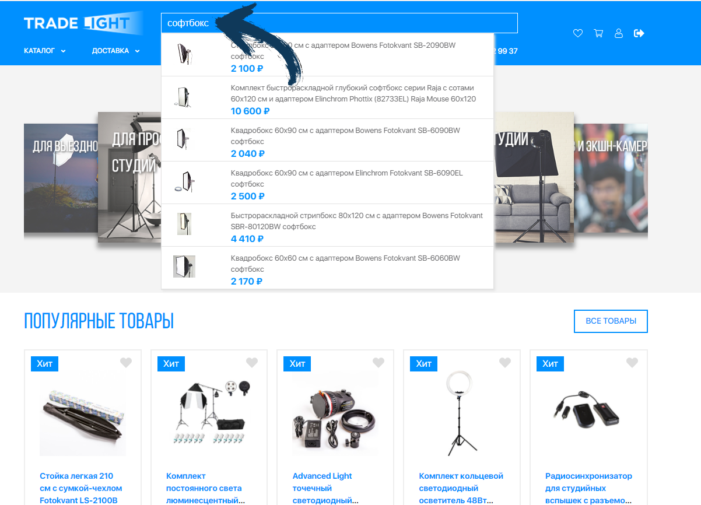
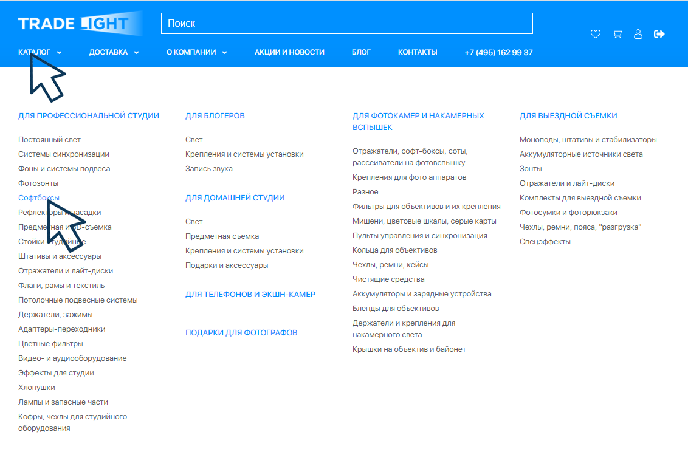
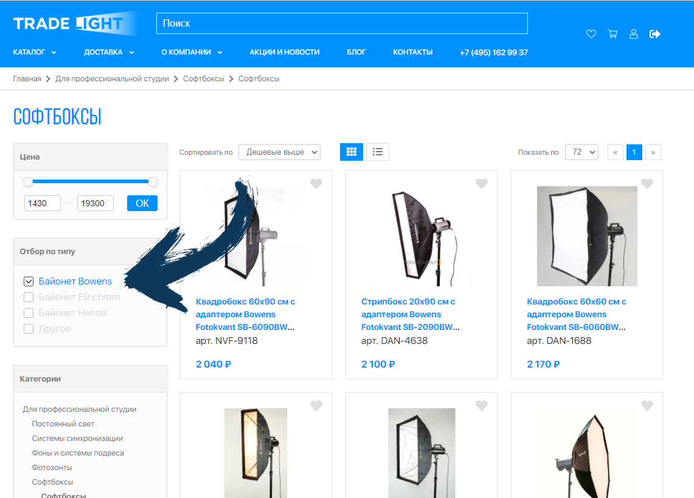
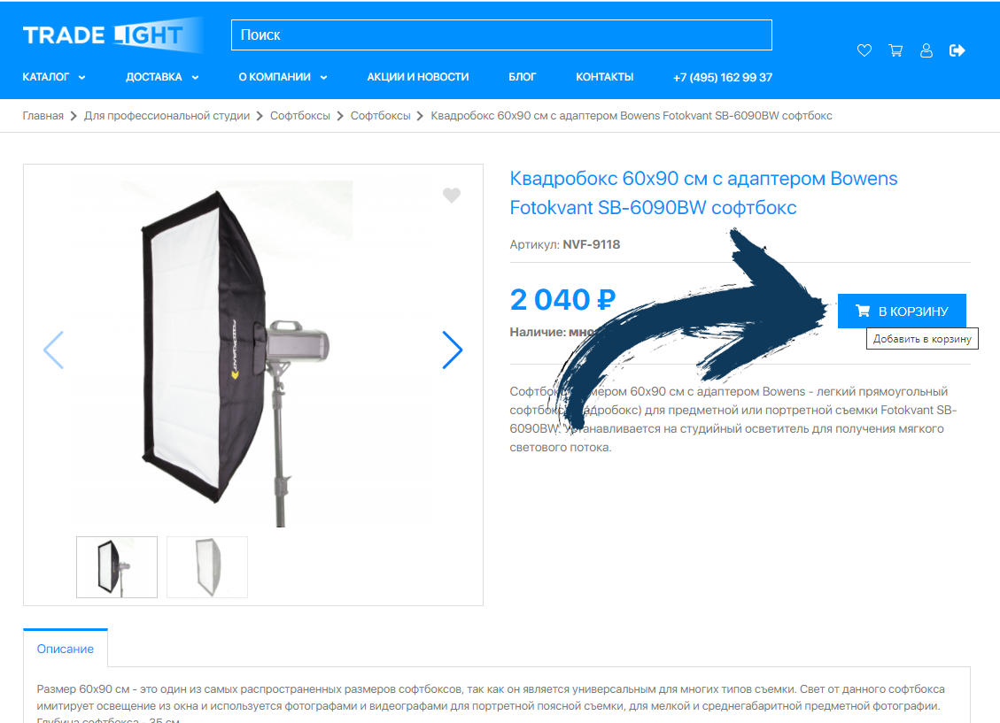
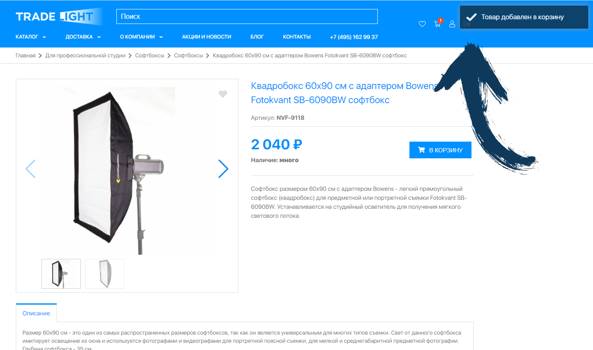
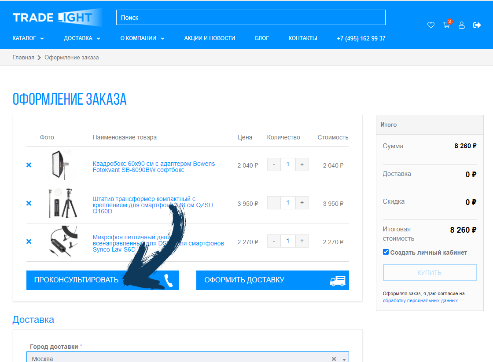

Как сделать заказ
Выбор и заказ товара
Все цены на товары, которые вы найдете в нашем Каталоге, соответствуют реальным ценам магазина.
Предлагаемый для покупки товар вы увидите, просматривая наш Каталог. Покупателю предоставляется возможность самостоятельно ознакомиться с товарами, сопроводительной информацией, выбрать и приобрести необходимые товары с доставкой в указанное место.
Наши специалисты всегда готовы помочь вам с выбором. Консультацию по возникшим вопросам можно получить по телефону: +7(495)162-99-37.
Как сделать заказ на нашем сайте
1. Выберите понравившийся товар
Если вы уже знаете артикул или название товара, для удобства поиска можно воспользоваться строкой поиска, которая расположена в верхней части страницы.
В строку поиска можно вписать не только конкретный артикул, но и запрос общего плана. Например, слово «софтбокс». Далее следует нажать кнопку Enter на клавиатуре.

Также можно воспользоваться поиском через общий каталог товаров, последовательно выбирая интересующую группу товаров (например: каталог > Для профессиональной судии > софтбоксы) и передвигая указатель курсора до нужного раздела.

После того, как вы нажмете на название раздела, откроется страница, где представлены товары с указанием цены, а также небольшой фотографией и артикулом.
Нажав картинку карточки товара, вы перейдете на страницу с подробным описанием товара и сможете ознакомиться с характеристиками и увидеть дополнительные фотографии.
В поиске и выборе товара через каталог также поможет блок фильтров по ключевым характеристикам товаров, расположенный в левой части нашего сайта.
Вы можете отметить интересующую характеристику, и товары, НЕ советующие вашему выбору, будут убраны со страницы.

2. Кладем товары в корзину

3. Ваша корзина
Для оформления заказа перейдите в раздел «Корзина». Он представлен отдельным значком (расположен в верхней правой части сайта), с изображением и красным кружочком с цифрой, которая отображает количество отобранных товаров на данный момент.
При добавлении товара в корзину, в верхнем правом углу вы увидите небольшое всплывающее сообщение «Товар добавлен в корзину», подтверждающее добавление товара в ваш заказ.

4. Оформляем заказ
А. Просмотрите содержимое заказа. Вы можете изменить количество товара или удалить то, что вам не нужно.
Если у вас остались вопросы по выбранным товарам, вы можете воспользоваться кнопкой «Проконсультировать» до оформления заказа. После нажатия на нее, укажите свой контактный номер телефона, ваше имя, и наш консультант свяжется с вами и поможет с выбором.

Б. Далее необходимо ввести данные для службы доставки – город и адрес, куда мы доставляем товар.
- При выборе самовывоза из пункта выдачи СДЕК – на карте выберите точку ПВЗ и нажмите кнопку «Выбрать».
- При выборе экспресс-доставки по Москве – выберете данный пункт и укажите адрес доставки максимально подробно (№ дома, № подъезда, этаж, домофон)
- При выборе курьерской доставки СДЕК до двери - выберете этот пункт и укажите адрес доставки максимально подробно (№ дома, № подъезда, этаж, домофон)
Исходя из общего веса вашего заказа, выбранного вами метода доставки и адреса доставки – стоимость доставки будет рассчитана автоматически. Вы увидите ее отдельной строкой.
В. Последний этап. Укажите свои контактные данные и желаемый способ оплаты.
Если вы являетесь представителем юридической организации, при оформлении нажмите кнопку "Юридическое лицо (выставить счет)".
После того, как вы нажмете на кнопку "Купить", заказ будет оформлен и передан нашему менеджеру. Менеджер свяжется с вами, подтвердит актуальность заказа и все необходимые детали, в том числе и по совместимости оборудования.
Также на почту, которую вы указали при оформлении заказа, вам обязательно придёт автоматическое письмо-подтверждение оформления заказа, в котором будут указаны выбранные вами товары, их стоимость, стоимость доставки, номер заказа, адрес доставки, ваши контактные данные.
Пожалуйста, проверьте ваш заказ еще раз, в том числе номер телефона. Ваш заказ будет отправлен только после того, как менеджер созвонится с вами и подтвердит актуальность заказа.
5. Подтверждение доставки
Если доставка осуществляется по регионам России, после подтверждения заказа, менеджер дополнительно вышлет на указанную вами почту письмо, содержащее трек-номер, присвоенный СДЕК, по которому вы сможете отслеживать ход доставки своего заказа на сайте СДЕК в разделе «Отследить заказ».
Приятных вам покупок!